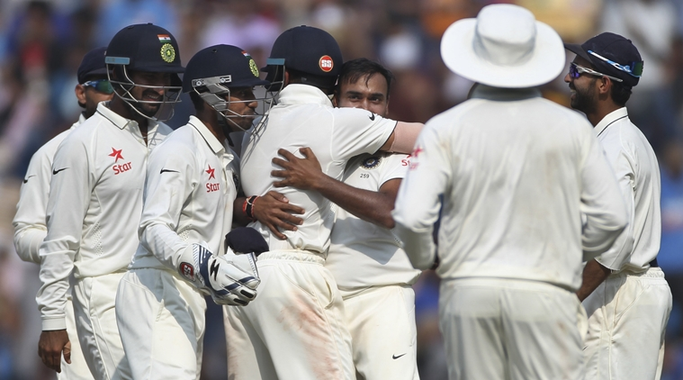
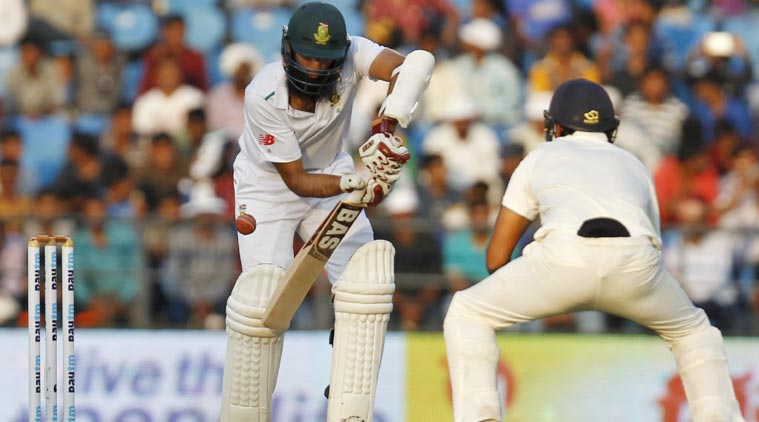
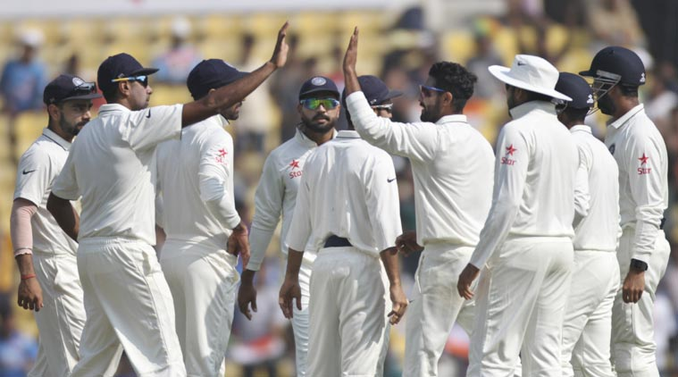
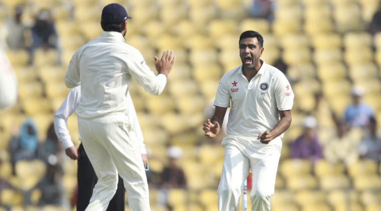

India vs South Africa, 3rd Test, Day 3: Indian spinners again reigned supreme once Amla-Du Plessis partnership broke. (Source: AP)After a not-so-good session when Amla and Du Plessis almost rekindled the hopes of a win in South Africa dressing room, India struck back with spinner Ravi Ashwin running through the visitors lower order and grabbing seven wickets in the course. In the end, South Africa were no match as they surrendered the series and a coveted record of staying unbeaten for nine long years on an away tour.
Cricket Scorecard: India vs South Africa
Watch: Day 3 review (App users click here)
As it happened (Newest on top)
1532 hrs IST: Ravi Ashwin registers the figures of 7/66 as he take the final South African wicket to fall in Nagpur.
1525 hrs IST: WICKET! All Over! India win by 124 runs, take unassailable 2-0 lead in 4-match series
1509 hrs IST: Meanwhile the day night Test is ON!
Congratulations
@petersiddle403
on taking your 200th Test Wicket. Great achievement Sids. Well done mate.
pic.twitter.com/YEpxHP0bVX
— Glenn McGrath (@glennmcgrath11)
November 27, 2015
1501 hrs IST: WICKET! SA falling in a heap, R Ashwin gets his 10th scalp in the match. SA 167/8
1454 hrs IST: WICKET! The big fish JP Duminy is trapped LBW by Ravi Ashwin for 19. India sense a win here.
1447 hrs IST: South Africa six down but exactly 150 runs away, they are fighting for a win.
1410 hrs IST: Tea taken in Nagpur! South Africa 151/6 needing another 159 runs for a win. India need 4 more wickets
1352 hrs IST: WICKET! Amit Mishra gets another. A low googly to clean up a set Faf du Plessis. South Africa six down for 135
Exactly a month after he was released on bail, Amit Mishra has gotten India out of jail. Sort of
#INDvSA
@IExpressSports
— Bharat Sundaresan (@beastieboy07)
November 27, 2015
1339 hrs IST: WICKET! India finally break the stand. Amit Mishra with a beauty of a delivery. Pitches it up and it turns sharply. Bounces off the pitch and Amla manages to glove it to Virat Kohli at slips. SA 5 down
1322 hrs IST: The pitch is behaving showing all sorts of signs of distortion but South Africa hanging on
1300 hrs IST: Hashim Amla and Faf du Plessis partnership growing and it is hurting India
1240 hrs IST: Frequent appeals from India but both Amla and Faf survive. South Africa making slow but steady progress
Mishra extracting enough turn now, but Faf and Amla trudge along
#IndvsSA
http://t.co/ykVd1qp7OM
— BCCI (@BCCI)
November 27, 2015
1217 hrs IST: South Africa now need less than 200 runs to win this Test. Can they do it or will India take the 6 remaining wickets?
1210 hrs IST: Players back onto the field
1130 hrs IST: Amla and Faf du Plessis take South Africa to 105/4 at Lunch on Day 3 with a 47-run unbeaten stand
No Indian or SA player is wearing black armbands. But Amla’s helmet has extra protection. The perfect tribute to Phil Hughes.
#INDvSA
— Daksh Panwar (@Daksh140)
November 27, 2015
1110 hrs IST: India searching for wickets now. Amla and Faf looking comfortable with Lunch round the corner
1053 hrs IST: Faf du Plessis and Hashim Amla slowly gathering runs for South Africa
1025 hrs IST: Hashim Amla keeping things steady at one end. Slowly, South Africa are rebuilding
1004 hrs IST: WICKET! Ashwin has done it again! AB de Villiers fails to pick a carrom ball from the off-spinner and is adjudged LBW!
AB de Villiers in Tests in India 1st inns ave: 71.28 2nd inns ave: 9.20
#IndvSA
— Mohandas Menon (@mohanstatsman)
November 27, 2015
0949 hrs IST: WICKET! R Ashwin, once again, gives India the breakthrough. Elgar caught by Pujara
0936 hrs IST: R Ashwin to bowl from the other end. Remember his start with the ball yesterday?
0930 hrs IST: Ishant Sharma to start for India. Hashim Amla on strike
0904 hrs IST: South Africa resume Day 3 at 32/2 still needing 278 more runs for a win while India need eight more wickets to take a 2-0 unassailable lead in the series
0900 hrs IST: Day 3 in Nagpur! Play starts in 30 minutes
Recap Day 2

India vs South Africa, 3rd Test, Day 3: Hashim Amla and Co. need a special effort with the bat on a turning Day 3 strip. (Source: Reuters)Nerves already shot, unplayable deliveries bursting through a dust-swirl triggering more panic, their batting techniques unequipped to handle this Indian spice, South Africans were like drugged men. A frenetic day where 20 wickets fell should exhilarate but it had a funereal air about it.
Pitches are diluting the joy of success

India vs South Africa, 3rd Test, Day 3: The pitches have spoiled the series, feels Harsha Bhogle. (Source: AP)I must admit to a sense of emptiness at the way this series has been played out. I must also admit to being hugely excited before it began.
A very good team in home conditions was going to take on a team, the only team, that travelled well in contemporary cricket. I was excited about a young Indian captain who played cricket for the right reasons and who genuinely respected the game. I was excited about a young Indian batting side and an off-spinner who I thought was moving into the top drawer of international cricket. I was excited at the prospect of seeing two modern greats whose dignity adorns our game. And I was excited about seeing one of the great fast bowlers of our game adapt to life with a little less speed.
What is the problem about spin and bounce? asks Ashwin

India vs South Africa, 3rd Test, Day 3: R Ashwin returned with impressive figures of 5/32 in the first innings. (Source: AP)India off-spinner Ravichandran Ashwin questioned all those who are critical of Indian pitches offering substantial turn asking why no one raises a question when an Ashes Test at Trent bridge ends in just a shade over two days.